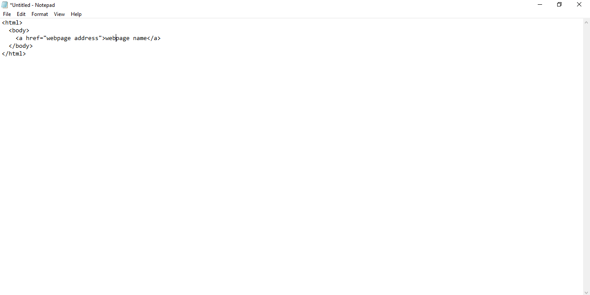
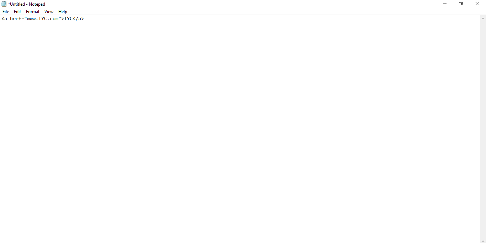
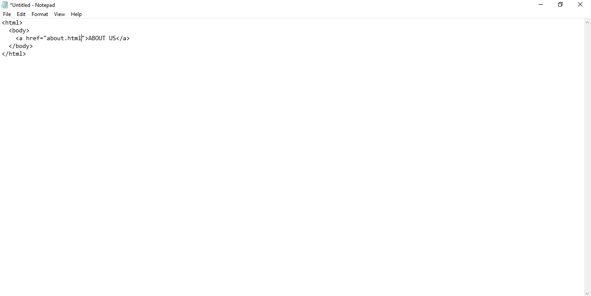

In common sense, links are used to connect to things together. When brought to web development we can then say links are use to connect two or more webpages together. When browsing, sometimes you would need to navigate to another page to view more information, that is where linking becomes useful.
In HTML, we use the a tag for linking. It also has a closing tag
SYNTAX For more understanding, if we are browsing about websites teaching HTML and we see TYC as part of the examples. We would click on it and when clicked on, the page for TYC shows up. This is how it is done.
Now remember this, when trying to link two or more pages together, let's say "home page" and "about us". You write the code for the home page and save it e.g "home.html" then you write the "about us" code and save it e.g about .html in the same folder you saved the home page. Then in the home page code you do this: 
<-- -->